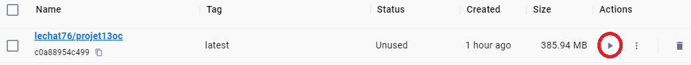
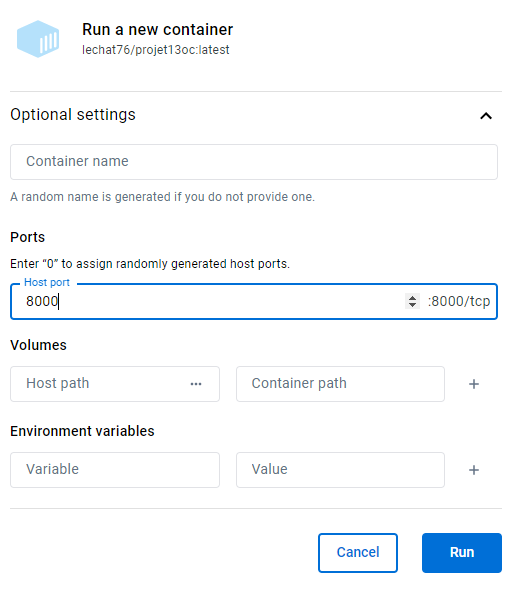
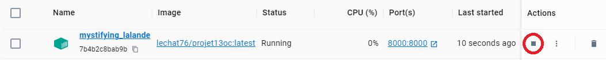
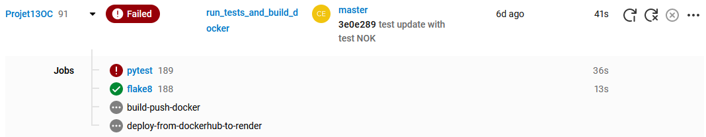
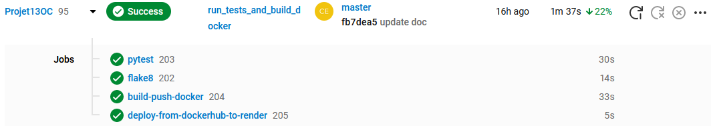
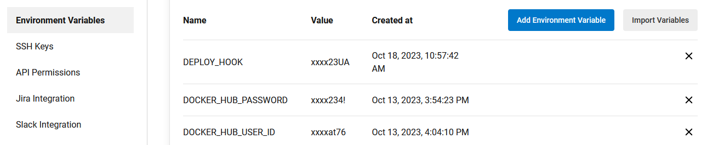
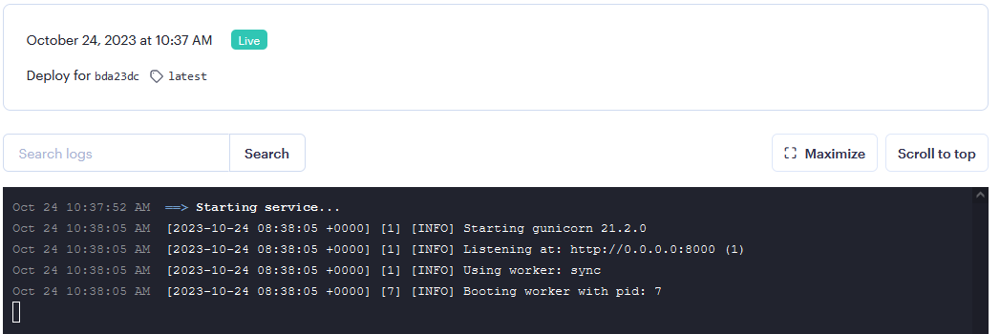
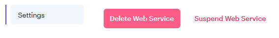

Programming interfaces
Docker desktop
When you build an image of your project, the file is stored localy. You can access to it with Docker Desktop interface.
From this interface you can start your application by clicking on the “play button”
 When an image is running, an “container” is created. From there, you can stop the application
CircleCi
From the CircleCi site, you can access to the daskboard (need to be logged in). Here you can see all steps of the pipeline. In case of fail, you can see wich step stop the pipeline.
failure case:

clear case:

One of the great advantage of CircleCi is you can store sensitives datas (like user and password to access to Docker, Render…). In that way, in the config.yml you can use variable stored in CircleCi that ensures that the data will not be seen. You can access via to the project settings.
Render
Render is a “Paas” server used to deploy application from Git repository or Docker Hub image. When the deploy hook is accedded, Render download image from Docker Hub and launch web service.
You can stop the web service from the setting menu
